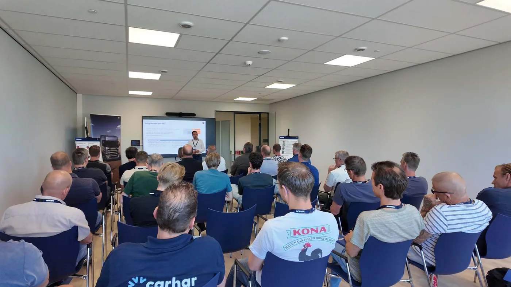

Scania Nederland informó el 27 de agosto que 104 representantes de empresas carroceras participaron en tres jornadas de capacitación en Zwolle. El programa se concentró en comunicación, seguridad y calidad, tres aspectos que determinan si un chasis y su equipo final funcionan como una sola unidad.
Los participantes recorrieron la planta, estudiaron las directrices de montaje y visitaron el Customer Delivery Center. Allí se trabajó sobre intervención segura, tomas de fuerza o PTO y desarrollos futuros. Quienes aprobaron una evaluación final recibieron la certificación Scania Nederland Approved Bodybuilder.
Carrozar no es colocar una caja
Un camión vocacional se completa cuando chasis, hidráulica, electricidad y carrocería quedan integrados. Un volcador, recolector, hidrogrúa o equipo frigorífico aplica cargas y consume energía de maneras distintas. Si el proyecto comienza después de recibir el chasis, aparecen reubicaciones, perforaciones y demoras evitables.
La capacitación busca que fabricante y carrocero compartan información desde el pedido. Peso, centro de gravedad, distancias, potencia auxiliar y secuencia de trabajo deben definirse antes de fabricar. Cuanto más temprano se resuelve, menor es el riesgo de comprometer garantía o seguridad.
Un chasis preparado desde Zwolle
Scania fabrica cada chasis según la especificación del cliente y lo prepara para la carrocería prevista. El diseño modular, el patrón flexible de perforaciones y la posibilidad de distribuir componentes ayudan a reducir modificaciones posteriores.
La marca señala que, en muchos casos, el carrocero ya no necesita mover depósitos o cajas de baterías. Evitar esos traslados ahorra tiempo y conserva tuberías, cables, protecciones y distribución de peso tal como fueron validados.

La toma de fuerza como sistema
La PTO transmite potencia del tren motriz a una bomba, compresor u otro equipo. Elegirla requiere conocer torque, régimen, tiempo de uso y condiciones térmicas. Una relación incorrecta puede hacer que el motor trabaje fuera de su zona eficiente o que la bomba supere su velocidad admisible.
También intervienen software, enclavamientos y seguridad. Algunas funciones sólo deben activarse con freno aplicado, caja en neutro o velocidad limitada. En camiones actuales, conectar la parte mecánica sin configurar la electrónica deja el montaje incompleto.
Riesgos durante el trabajo
- Perforaciones: debilitar un larguero o hacerlo fuera de la zona prevista puede generar fisuras.
- Soldadura: corriente, calor y desconexión incorrecta pueden afectar electrónica y tratamiento del acero.
- Cableado: empalmes sin protección fallan por agua, vibración o consumo excesivo.
- Hidráulica: mangueras mal guiadas rozan, se calientan o quedan expuestas a impactos.
- Peso: una distribución deficiente sobrecarga ejes aun cuando el total parezca correcto.
- Acceso: la carrocería no debe impedir mantenimiento de filtros, baterías o depósitos.
La comunicación evita retrabajo
La formación reunió a Presales, electromovilidad, producción y centro de entrega. Esa mezcla es importante porque ningún área posee por sí sola toda la información. Ventas conoce la misión; ingeniería define límites; producción prepara el chasis y el carrocero convierte el conjunto en herramienta.
Un documento de interfaz debe registrar puntos de fijación, señales eléctricas, consumos, pesos y responsabilidades. Si algo cambia, todas las partes necesitan la versión nueva. Una instrucción informal puede funcionar en una unidad y convertirse en falla repetida cuando se fabrica una serie.
El desafío de los camiones eléctricos
La electromovilidad agrega baterías de alta tensión, circuitos de refrigeración y zonas donde no se puede perforar ni soldar. También cambia la forma de obtener energía para equipos auxiliares. Por eso especialistas de e-Mobility participaron del programa.
El carrocero debe conocer límites de aislamiento, procedimientos de desenergización y ubicación de componentes. Una intervención no autorizada puede poner en riesgo a técnicos y vehículo. La certificación deja de ser un sello comercial y se convierte en una barrera de seguridad.
Aplicación en Argentina
Las jornadas fueron para empresas neerlandesas y la certificación pertenece a Scania Nederland. No equivale a una acreditación local. El principio, sin embargo, es plenamente útil para camiones argentinos, donde muchas unidades trabajan con volcadores, cisternas, grúas, cajas térmicas o equipos mineros.
Antes de modificar conviene solicitar el manual de carrozado específico del modelo, confirmar la PTO disponible y pesar el vehículo terminado por eje. También hay que documentar cambios para que el taller pueda diagnosticar años después sin adivinar qué agregó el instalador.
La entrega también necesita control
Una carrocería terminada debe probarse con carga y en todas sus secuencias. Luces, alarmas, bloqueos, parada de emergencia y funcionamiento hidráulico requieren una lista verificable. El pesaje por eje confirma que el resultado real coincide con el cálculo inicial.
El cliente necesita recibir planos, parámetros, manuales y referencias de filtros o consumibles agregados. Sin esa documentación, el primer mantenimiento convierte un montaje profesional en una investigación. Una buena entrega protege al operador y facilita el trabajo del taller durante años.
Calidad desde el pedido hasta la entrega
Scania programó otras dos jornadas para octubre. La continuidad reconoce que producto y normas cambian, y que la relación con carroceros necesita actualización periódica.
El aprendizaje central es simple: un buen camión carrozado no se obtiene corrigiendo al final. Se diseña en conjunto, se monta según directrices y se entrega con información suficiente para operarlo y mantenerlo durante toda su vida útil.